The effectiveness of each tool declines.
The number of options decreases, while the cost of using them increases.
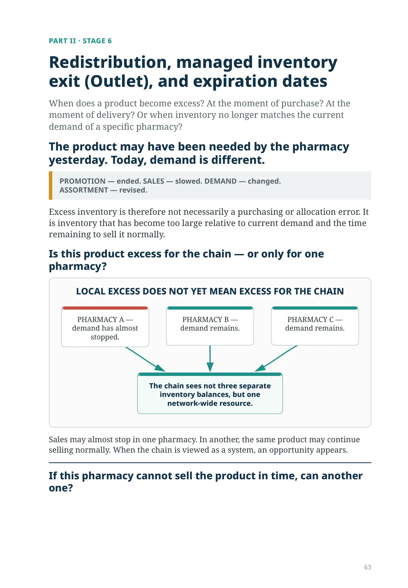
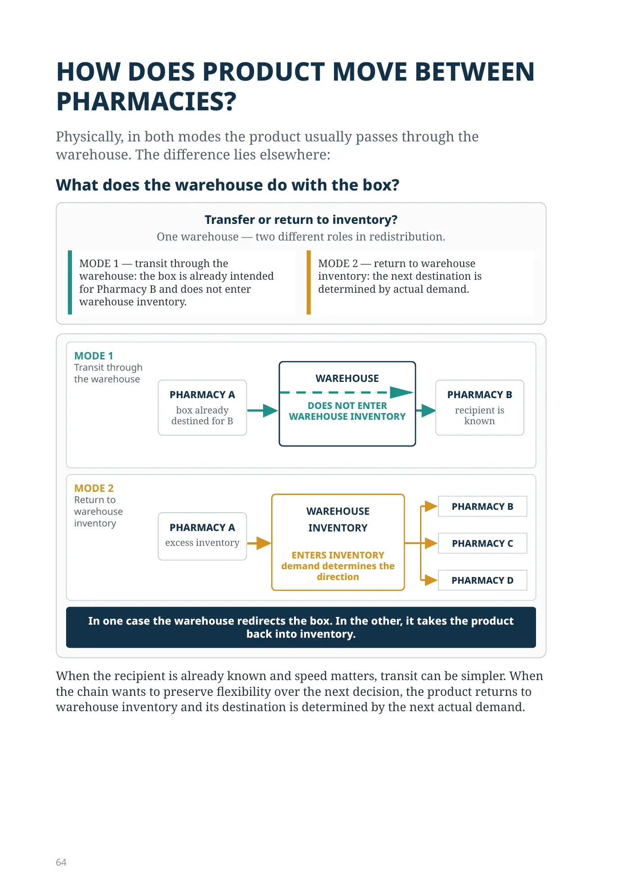
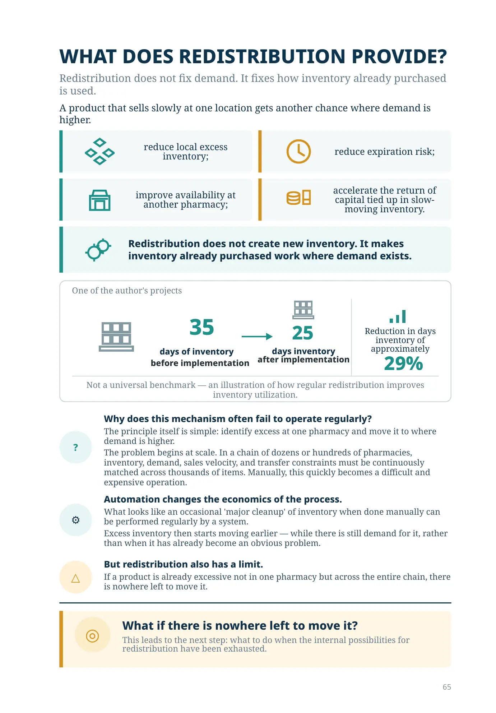
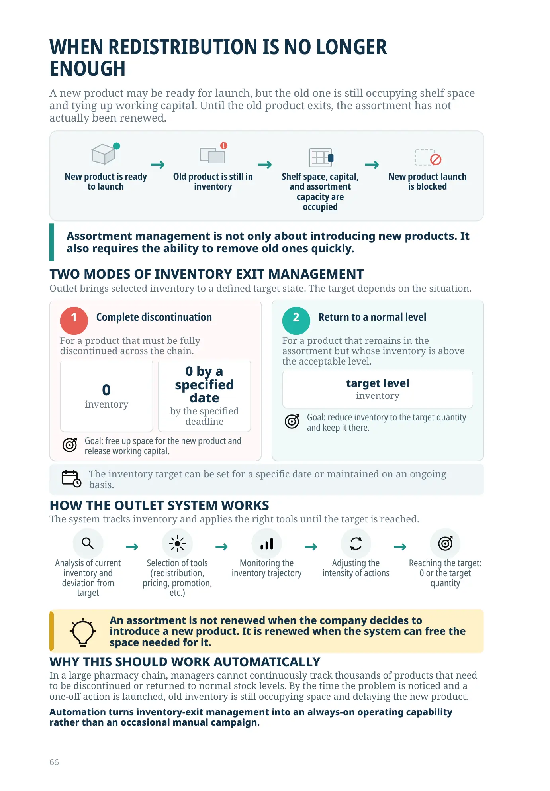
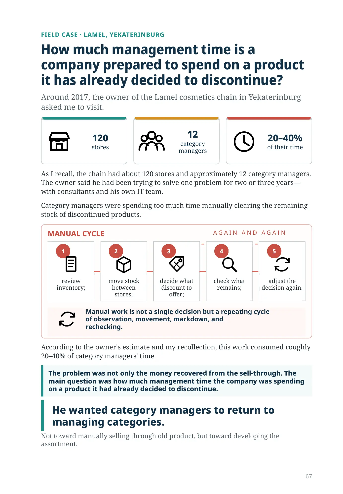
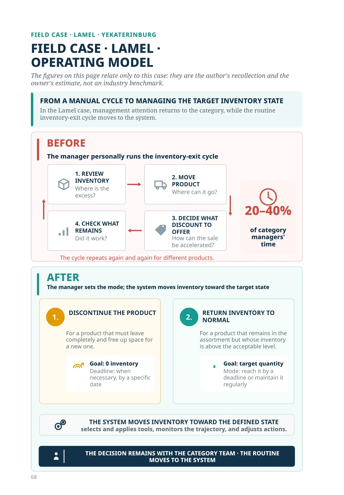
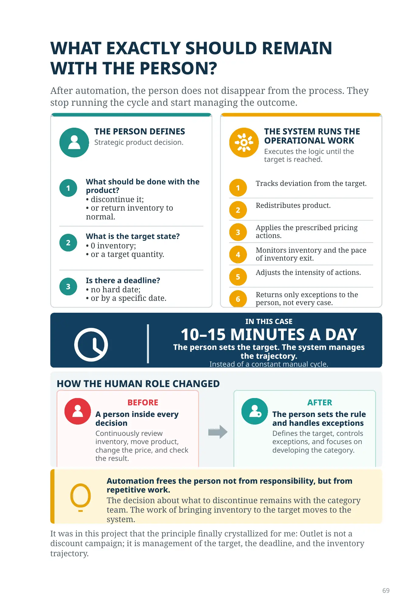
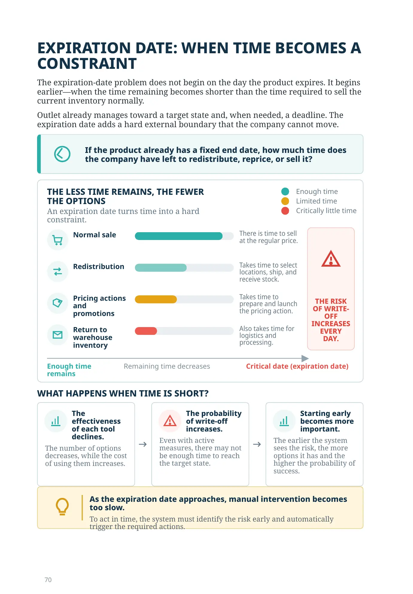
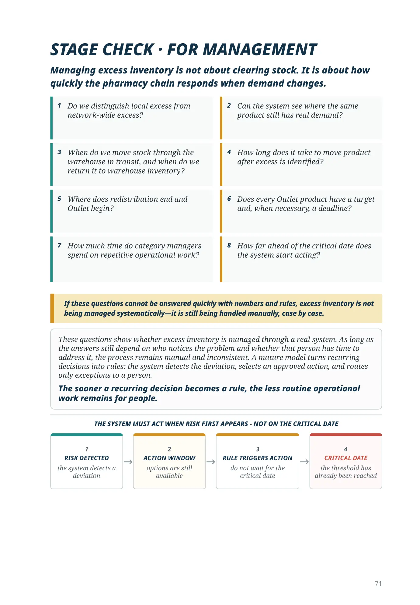
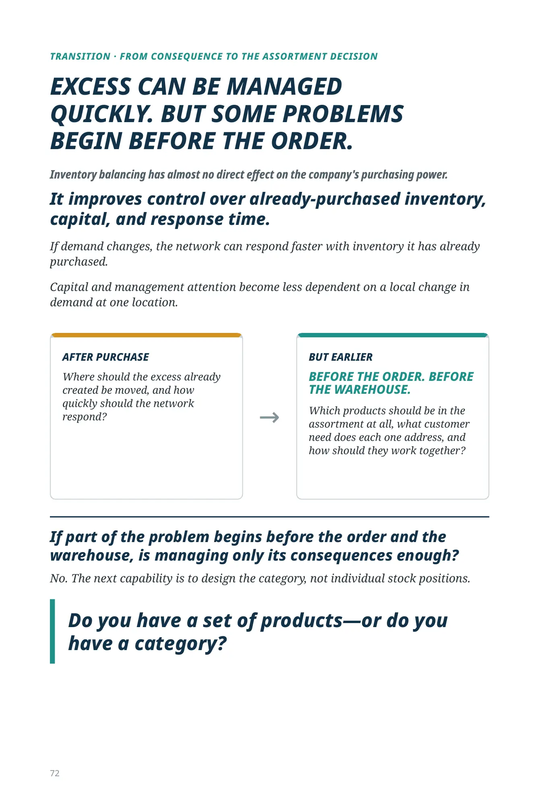
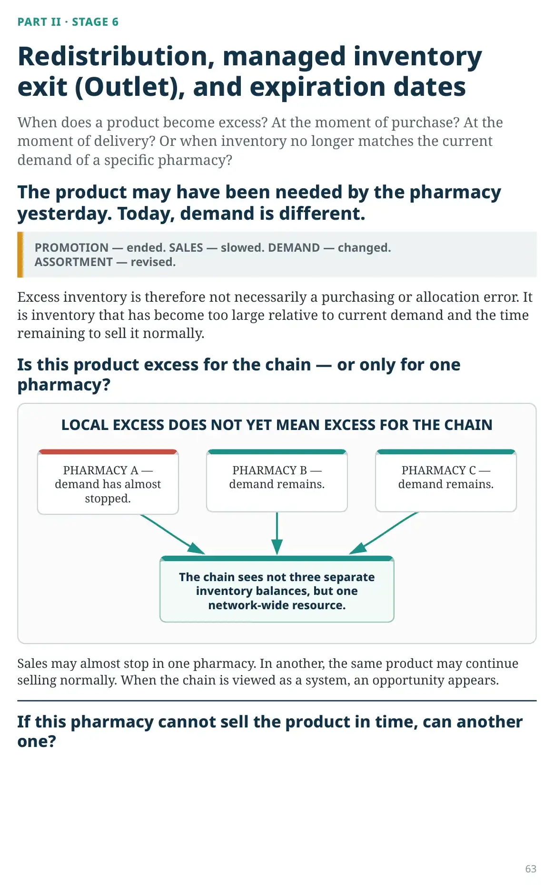
PART II · STAGE 6
When does a product become excess? At the moment of purchase? At the moment of delivery? Or when inventory no longer matches the current demand of a specific pharmacy?
PROMOTION — ended. SALES — slowed. DEMAND — changed.
ASSORTMENT — revised.
Excess inventory is therefore not necessarily a purchasing or allocation error. It is inventory that has become too large relative to current demand and the time remaining to sell it normally.
PHARMACY A — demand has almost stopped.
PHARMACY B — demand remains.
PHARMACY C — demand remains.
The chain sees not three separate inventory balances, but one network-wide resource.
Sales may almost stop in one pharmacy. In another, the same product may continue selling normally. When the chain is viewed as a system, an opportunity appears.
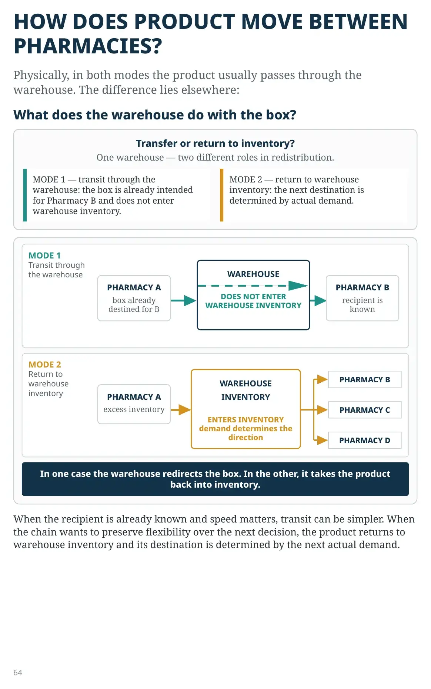
Physically, in both modes the product usually passes through the warehouse. The difference lies elsewhere:
Transfer or return to inventory?
One warehouse — two different roles in redistribution.
MODE 1 — transit through the warehouse: the box is already intended for Pharmacy B and does not enter warehouse inventory.
MODE 2 — return to warehouse inventory: the next destination is determined by actual demand.
When the recipient is already known and speed matters, transit can be simpler. When the chain wants to preserve flexibility over the next decision, the product returns to warehouse inventory and its destination is determined by the next actual demand.
Redistribution does not fix demand. It fixes how inventory already purchased is used.
A product that sells slowly at one location gets another chance where demand is higher.
One of the author's projects
days of inventory
before implementation
after implementation
Reduction in days of inventory of approximately 29%
Not a universal benchmark — an illustration of how regular redistribution
improves inventory utilization.
The principle itself is simple: identify excess at one pharmacy and move it to where demand is higher.
The problem begins at scale. In a chain of dozens or hundreds of pharmacies, inventory, demand, sales velocity, and transfer constraints must be continuously matched across thousands of items. Manually, this quickly becomes a difficult and expensive operation.
What looks like an occasional 'major cleanup' of inventory when done manually can be performed regularly by a system.
Excess inventory then starts moving earlier — while there is still demand for it, rather than when it has already become an obvious problem.
If a product is already excessive not in one pharmacy but across the entire chain, there is nowhere left to move it.
This leads to the next step: what to do when the internal possibilities for redistribution have been exhausted.
A new product may be ready for launch, but the old one is still occupying shelf space and tying up working capital. Until the old product exits, the assortment has not actually been renewed.
Outlet brings selected inventory to a defined target state. The target depends on the situation.
For a product that must be fully discontinued across the chain.
inventory
by the specified deadline
Goal: free up space for the new product and release working capital.
For a product that remains in the assortment but whose inventory is above the acceptable level.
inventory
Goal: reduce inventory to the target quantity and keep it there.
The inventory target can be set for a specific date or maintained on an ongoing basis.
The system tracks inventory and applies the right tools until the target is reached.
An assortment is not renewed when the company decides to introduce a new product. It is renewed when the system can free the space needed for it.
In a large pharmacy chain, managers cannot continuously track thousands of products that need to be discontinued or returned to normal stock levels. By the time the problem is noticed and a one-off action is launched, old inventory is still occupying space and delaying the new product.
Automation turns inventory-exit management into an always-on operating capability rather than an occasional manual campaign.
FIELD CASE · LAMEL, YEKATERINBURG
Around 2017, the owner of the Lamel cosmetics chain in Yekaterinburg asked me to visit.
120stores
12category managers
20–40%of their time
As I recall, the chain had about 120 stores and approximately 12 category managers. The owner said he had been trying to solve one problem for two or three years—with consultants and his own IT team.
Category managers were spending too much time manually clearing the remaining stock of discontinued products.
Manual work is not a single decision but a repeating cycle
of observation, movement, markdown, and
rechecking.
According to the owner's estimate and my recollection, this work consumed roughly 20–40% of category managers' time.
The problem was not only the money recovered from the sell-through. The main question was how much management time the company was spending on a product it had already decided to discontinue.
Not toward manually selling through old product, but toward developing the assortment.
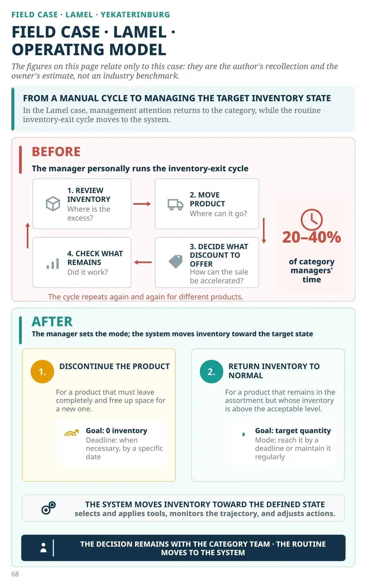
FIELD CASE · LAMEL · YEKATERINBURG
The figures on this page relate only to this case: they are the author's recollection and the owner's estimate, not an industry benchmark.
In the Lamel case, management attention returns to the category, while the routine inventory-exit cycle moves to the system.
The manager personally runs the inventory-exit cycle
Where is the excess?
Where can it go?
How can the sale be accelerated?
Did it work?
20–40% of category managers' time
The cycle repeats again and again for different products.
The manager sets the mode; the system moves inventory toward the target state
For a product that must leave completely and free up space for a new one.
Goal: 0 inventory
Deadline: when necessary, by a specific date
For a product that remains in the assortment but whose inventory is above the acceptable level.
Goal: target quantity
Mode: reach it by a deadline or maintain it regularly
THE DECISION REMAINS WITH THE CATEGORY TEAM · THE ROUTINE MOVES TO THE SYSTEM
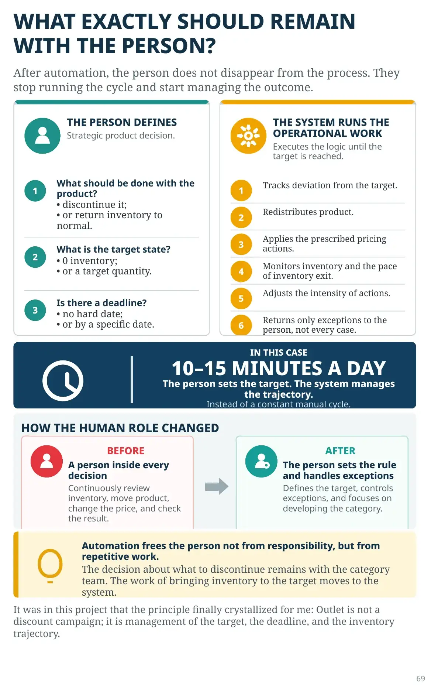
After automation, the person does not disappear from the process. They stop running the cycle and start managing the outcome.
Strategic product decision.
Executes the logic until the target is reached.
IN THIS CASE
10–15 MINUTES A DAY
The person sets the target. The system manages the trajectory.
Instead of a constant manual cycle.
A person inside every decision
Continuously review inventory, move product, change the price, and check the result.
The person sets the rule and handles exceptions
Defines the target, controls exceptions, and focuses on developing the category.
Automation frees the person not from responsibility, but from repetitive work.
It was in this project that the principle finally crystallized for me: Outlet is not a discount campaign; it is management of the target, the deadline, and the inventory trajectory.
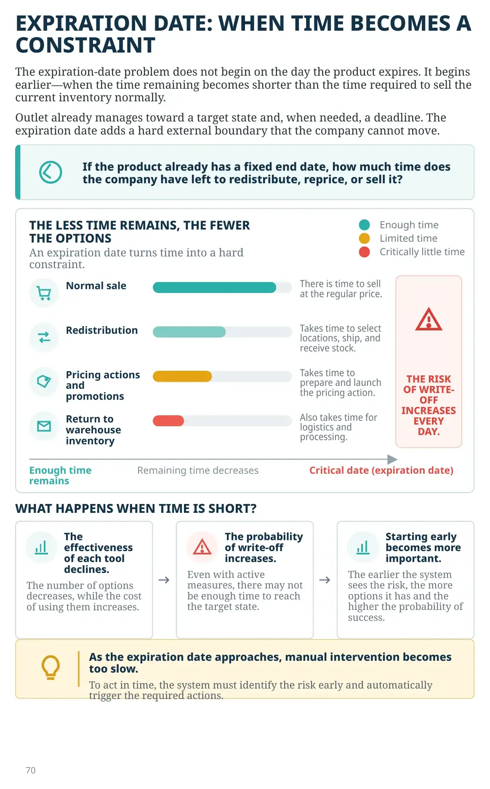
The expiration-date problem does not begin on the day the product expires. It begins earlier—when the time remaining becomes shorter than the time required to sell the current inventory normally.
Outlet already manages toward a target state and, when needed, a deadline. The expiration date adds a hard external boundary that the company cannot move.
An expiration date turns time into a hard constraint.
There is time to sell at the regular price.
Takes time to select locations, ship, and receive stock.
Takes time to prepare and launch the pricing action.
Also takes time for logistics and processing.
The number of options decreases, while the cost of using them increases.
Even with active measures, there may not be enough time to reach the target state.
The earlier the system sees the risk, the more options it has and the higher the probability of success.
To act in time, the system must identify the risk early and automatically trigger the required actions.
If these questions cannot be answered quickly with numbers and rules, excess inventory is not being managed systematically—it is still being handled manually, case by case.
These questions show whether excess inventory is managed through a real system. As long as the answers still depend on who notices the problem and whether that person has time to address it, the process remains manual and inconsistent. A mature model turns recurring decisions into rules: the system detects the deviation, selects an approved action, and routes only exceptions to a person.
TRANSITION · FROM CONSEQUENCE TO THE ASSORTMENT DECISION
If demand changes, the network can respond faster with inventory it has already purchased.
Capital and management attention become less dependent on a local change in demand at one location.
Where should the excess already created be moved, and how quickly should the network respond?
Which products should be in the assortment at all, what customer need does each one address, and how should they work together?
No. The next capability is to design the category, not individual stock positions.